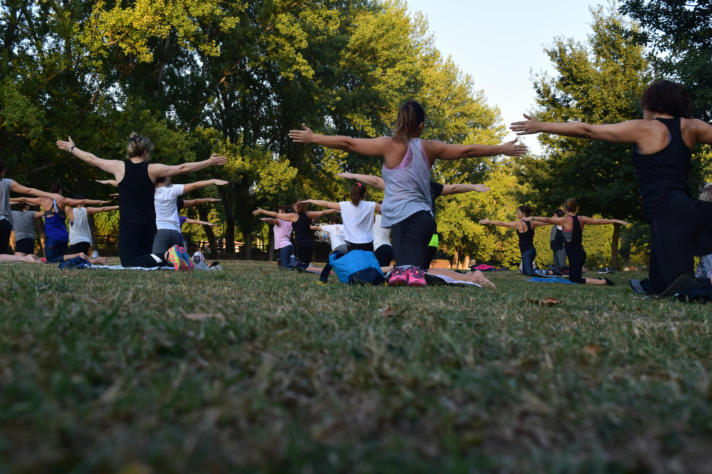

Alimentação Saudável

Alimentação Saudável é o hábito de consumir alimentos variados e equilibrados, garantindo ao corpo os nutrientes necessários para funcionar bem. Ela inclui frutas, verduras, legumes, grãos integrais, proteínas e gorduras boas, evitando o excesso de açúcar, sal e alimentos ultraprocessados. Manter uma alimentação saudável ajuda a prevenir doenças, melhora a disposição, fortalece o sistema imunológico e contribui para o bem-estar físico e mental.
Atividade Física

PAtividade Física é a prática regular de exercícios ou movimentos do corpo que ajudam a manter a saúde e o bem-estar. Ela contribui para o fortalecimento dos músculos e ossos, melhora a circulação sanguínea, ajuda no controle do peso e reduz o estresse. Além disso, praticar atividade física regularmente aumenta a disposição, melhora o humor e previne diversas doenças.
Saúde Mental
Saúde Mental refere-se ao equilíbrio emocional, psicológico e social de uma pessoa. Ela influencia a forma como pensamos, sentimos e lidamos com as situações do dia a dia. Cuidar da saúde mental envolve manter bons relacionamentos, descansar adequadamente, expressar sentimentos e buscar ajuda quando necessário. Uma boa saúde mental contribui para o bem-estar, a qualidade de vida e a capacidade de enfrentar desafios.